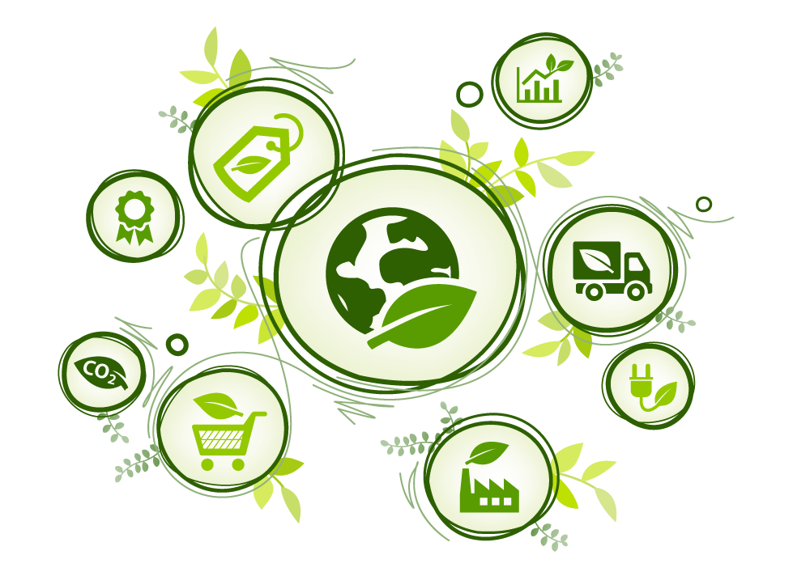

Green Software Foundation
En ideell organisasjon som samler bransjen for å bygge beste praksiser, standarder og verktøy rundt effektiv grønn koding.
Les merFå et magasin-inspirert innblikk i effektiv grønn koding og bærekraftige løsninger.
En ideell organisasjon som samler bransjen for å bygge beste praksiser, standarder og verktøy rundt effektiv grønn koding.
Les mer
Amazon Web Services investerer i fornybar energi, grønne datasentre og effektive sky-tjenester for å minimere karbonavtrykket for kunder globalt.
Les merGoogle Cloud er karbonnøytralt og jobber videre med “24/7 Carbon-Free Energy” ved å bruke AI og effektive datasentre for grønnere infrastruktur.
Les merNetflix benytter adaptiv strømming for å minimere båndbredde og energibruk, og arbeider med grønne datasentre for å redusere karbonavtrykket.
Les merMicrosoft har som mål å bli karbonnegative innen 2030, blant annet gjennom satsing på fornybar energi og AI-basert optimalisering.
Les mer
IBM investerer i klimaløsninger med AI og effektiv infrastruktur, og har flere initiativer for bærekraftig utvikling i programvare.
Les mer